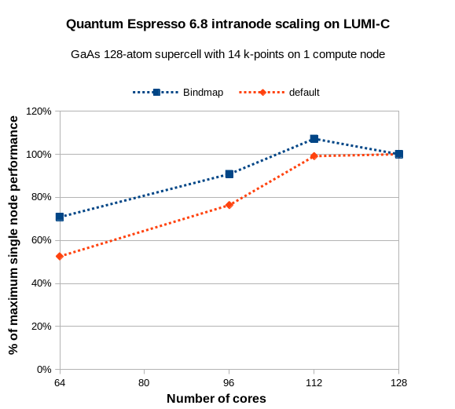

QuantumESPRESSO
[user-installed]
User documentation
Quantum ESPRESSO (QE) is "an integrated suite of Open-Source computer codes for electronic-structure calculations and materials modeling at the nanoscale. It is based on density-functional theory, plane waves, and pseudopotentials." (see the Quantum Espresso home page). In general, it runs well on LUMI-C.
There is currently no version of Quantum Espresso that can use the AMD GPUs in the Early Access Platform or LUMI-G.
Installing Quantum ESPRESSO
We provide automatic installation scripts for several versions of QE. The procedure in general is described on the EasyBuild page. The step by step procedure to install QE 7.0 is:
- Load the LUMI software environment:
module load LUMI/21.12. - Select the LUMI-C partition:
module load partition/C. - Load the EasyBuild module:
module load EasyBuild-user.
Then, you can run the install command:
eb QuantumESPRESSO-7.0-cpeGNU-21.12.eb -r
The installation takes ca 3 minutes. Afterwards, you will have a module called "QuantumESPRESSO/7.0.0-cpeGNU-21.12" installed in your home directory.
module load QuantumESPRESSO/7.0.0-cpeGNU-21.12
The usual QE binaries, pw.x, ph.x etc will now be in your PATH. Launch QE with e.g. srun pw.x. Please note that you must do module load LUMI/21.12 partition/C to see your Quantum Espresso module in the module system. The same applies to the SLURM batch scripts which you send to the compute nodes.
You can see other versions of QE that can be automatically installed by running the EasyBuild command
eb -S QuantumESPRESSO
or checking the LUMI-EasyBuild-contrib repository on GitHub directly.
Example batch scripts
A typical batch job using 2 compute nodes and MPI only:
#!/bin/bash
#SBATCH -J GaAs128
#SBATCH -N 2
#SBATCH --partition=small
#SBATCH -t 00:30:00
#SBATCH --mem=200G
#SBATCH --exclusive --no-requeue
#SBATCH -A project_XYZ
#SBATCH --ntasks-per-node=128
#SBATCH -c 1
export OMP_NUM_THREADS=1
ulimit -s unlimited
module load LUMI/21.12 partition/C QuantumESPRESSO/7.0.0-cpeGNU-21.12
srun pw.x -nk 4 -i gab128.in > gab128.out
A typical batch job with MPI and 4 OpenMP threads per rank:
#!/bin/bash
#SBATCH -J GaAs128
#SBATCH -N 2
#SBATCH --partition=small
#SBATCH -t 00:30:00
#SBATCH --mem=200G
#SBATCH --exclusive --no-requeue
#SBATCH -A project_XYZ
#SBATCH --ntasks-per-node=32
#SBATCH -c 4
export OMP_NUM_THREADS=4
export OMP_PLACES=cores
export OMP_PROC_BIND=close
ulimit -s unlimited
module load LUMI/21.12 partition/C QuantumESPRESSO/7.0.0-cpeGNU-21.12
srun pw.x -nk 4 -i gab128.in > gab128.out
Recommendations
Making use of k-point parallelization (the flag -nk) is very important in Quantum Espresso. In the following test case, a GaAs supercell with 128-atoms, an SCF cycle completes in a ca 1 hour on a LUMI-C compute node using the default settings without k-point parallelization. By supplying -nk 2, the runtime is cut to 38 minutes (1.3x faster). K-point parallelization is so important that it can be advantageous to reduce to the number of cores used on the compute nodes, and/or increase the number of k-points just to get even multiples which maximizes the value of -nk. Consider the case with 14 k-points: 128 cores are not evenly divisible by 14, which prevents the full use of k-point parallelization.But what about 14*8 = 112 cores? The graph below shows that you can actually gain speed by reducing the number of active cores and carefully placing the MPI ranks on the right processor cores.

The key to finding the best performance is to explicity bind the MPI ranks so that 7 cores are used on each core complex die (CCD) with 8 cores on the EPYC processor. This means that the 8th core needs to be skipped on each CCD. There is no easy way to do this in SLURM, other than hard-coding it like this:
srun --cpu-bind=map_cpu:0,1,2,3,4,5,6,8,9,10,11,12,13,14,16,17,18,19,20,21,22,24,25,26,27,28,29,30,32,33,34,35,36,37,38,40,41,42,43,44,45,46,48,49,50,51,52,53,54,56,57,58,59,60,61,62,64,65,66,67,68,69,70,72,73,74,75,76,77,78,80,81,82,83,84,85,86,88,89,90,91,92,93,94,96,97,98,99,100,101,102,104,105,106,107,108,109,110,112,113,114,115,116,117,118,120,121,122,123,124,125,126 pw.x ....
A few more examples of CPU bind maps are given on the Distribution and Bindind documentation page. It is especially important to do this if you run with e.g. half the number of cores on compute node to free up memory.
OpenMP parallelization can be used primarily to save memory. It is automatically used when OMP_NUM_THREADS is set to something else than 1 in the job script. OpenMP seems to work with decent efficiency on LUMI-C. Try testing lower numbers of OMP_NUM_THREADS first, about 2-4. Typically you will get about the same speed as with MPI only for regular DFT calculations, maybe somewhat faster (5-10%). The main benefit, however, is considerably less memory usage, ca 20% less for DFT. We have not tested the effect on exact exchange or other higher order methods yet.
FFT task parallelization and pencil decomposition are both necessary when running a large number of cores per pool of k-points. The -ntg flag alone seems to not work in recent versions of Quantum Espresso. You need to use it together with pencil decomposition (-pd true), which is an undocumented feature. Typically, small values of -ntg are sufficient to see any speed-up, for example -ntg 2 -pd true.
For sub-space diagonalization with SCALAPACK (the flag -nd), keeping the default (maximum) value is typically best. Reducing it will typically just increase the runtime.
User-installable modules (and EasyConfigs)
Install with the EasyBuild-user module:
eb <easyconfig> -r
To access module help after installation and get reminded for which stacks and partitions the module is
installed, use module spider QuantumESPRESSO/<version>.
EasyConfig:
- QuantumESPRESSO/6.8.0-cpeGNU-21.08 (EasyConfig: QuantumESPRESSO-6.8.0-cpeGNU-21.08.eb)
- QuantumESPRESSO/7.0-cpeGNU-21.12 (EasyConfig: QuantumESPRESSO-7.0-cpeGNU-21.12.eb)
- QuantumESPRESSO/7.1-cpeGNU-22.06 (EasyConfig: QuantumESPRESSO-7.1-cpeGNU-22.06.eb)
- QuantumESPRESSO/7.1-cpeGNU-22.08 (EasyConfig: QuantumESPRESSO-7.1-cpeGNU-22.08.eb)
Technical documentation
General information
Quantum ESPRESSO is an integrated suite of computer codes for electronic-structure calculations and materials modeling at the nanoscale. It is based on density-functional theory, plane waves, and pseudopotentials (both norm-conserving and ultrasoft).
EasyBuild
Version 6.8.0 for cpeGNU 21.08
- The EasyConfig is derived from the CSCS one
Version 7.0 for cpeGNU 21.12
- The EasyConfig is a port of the 6.8.0 one.
Version 7.1 for cpeGNU 22.06, 22.08
- The EasyConfig is a port of the 7.0 one.